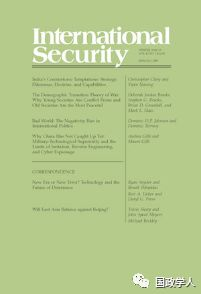

收录于合集

简 介
【作者】 Dominic D.P. Johnson：多米尼克·约翰逊，牛津大学教授，曾出版《过度自信与战争：积极幻想的浩劫与荣耀》（哈佛大学出版社，2004年），《未能获胜：对国际政治中的胜利和失败的看法》（与多米尼克·蒂尔尼合著，哈佛大学出版社，2006年）等书籍。他目前的工作重点是进化动力学，进化心理学和宗教在人类冲突与合作中的作用；
Dominic Tierney：多米尼克·蒂尔尼，斯沃斯莫尔学院政治学副教授，外交政策研究所的高级研究员，以及《大西洋月刊》的官方记者。出版的《罗斯福和西班牙内战:在分裂美国的斗争中保持中立和承诺》（杜克大学出版社，2007年）一书被《外交史》称作杰出的外交史典范，以及《我们如何战斗：十字军东征、泥潭和美国的战争方式》（Little，Brown，＆Co.，2010）等书籍。
【编译】 徐 琛
【校对】 赵炜婷
【审核】 王国欣
【来源】 Dominic D.P. Johnson and Dominic Tierney,Bad World:The Negativity Bias in International Politics.International Security (2018), 43,96-140
【期刊】 《国际安全》（International Security）是国际和国家安全领域的同行评议学术期刊。它成立于1976年，由哈佛大学贝尔弗科学与国际事务中心(Belfer Center for Science and International Affairs at Harvard University)编辑，麻省理工学院出版社(MIT Press)每年出版四次。2017年影响力因子为4.135，在“国际关系”类别的85种期刊中排名第2位。

糟糕的世界： 国际政治中的负面偏见 ****
Bad World ：The Negativity Bias in International Politics
多米尼克·蒂尔尼（Dominic Tierney）；多米尼克·约翰逊（Dominic D.P. Johnson）
核心观点
本文通过“负面偏见”这一概念论证在国际政治中决策制定者和公众对于负面信息的行为偏好、以及由此而产生的一系列行动逻辑。作者认为在国际关系进程中国家过度地关注负面信息，在国家间互动中，表现出对对手行为的不信任，并在这个过程中极力规避损失，甚至为了规避损失而产生赌徒心态，从而使双方陷入到紧张的冲突状态。文章以一战前后的德国为例进行了深入分析，并在结论中提出负面偏见是国际关系的一个核心特征，对于理解国家行为、分析冲突原因、论证外交政策等都有一定的借鉴意义。
本文共分为七个部分，第一部分通过对负面偏见进行解释，并提出其三大领域（威胁敏感性、损失厌恶和失败的显著性）；第二、三、四部分对威胁敏感性、损失厌恶、失败的显著性这三大领域进行解释，并论证其在国际政治中的作用；第五部分论证影响负面偏见程度的三个方面（评估的目标，信息流，时间、意识形态和代理人）；第六部分以德国为案例综述以上五个部分的概念；最后一部分总结负面偏见对国际关系理论和外交政策的影响及作用。
文章导读
**1
** 负面偏见及其三大领域
负面偏见是一种普遍的心理状态，它强调“坏胜于好”，在国际关系行为中，国家更多的关注负面信息，以此作为国家政策制定的依据。具体来说它表现为三大领域：（1）威胁敏感性。由于对负面信息关注过多，各国过分渲染冲突和威胁，从而陷入安全困境。但忽视威胁敏感性也同样危险，张伯伦的绥靖政策即是如此；（2）损失厌恶。人们对于损失比收益更敏感，因为损失是损失已有，这使得国家陷入到“捐赠效应”和关注沉没成本上，为了规避自我认知中的国家利益损失，而陷入到军备竞赛和政策失误等困境之中；（3）失败的显著性。人们倾向于从失败中汲取教训而非成功中学习经验，尤其是受“闪光灯记忆”的影响，国家尤其关注近期的失败教训，这使国家无法从成功和失败的两面进行类比学习，从而使决策不能够达到完善和理性。
**2
** **** 影响负面偏见的三个方面 **
**
影响负面偏见的因素有三：（ 1）评估的目标。目标是倾向于自我认知的偏见（过分自信）还是感知他人的偏见（消极情绪），这两种不同的状态会影响行为主体的价值判断；（2）信息流。负面偏见和积极偏见在不同的评估目标身上体现时，如何才能得到平衡并准确的评估对方和所发生的事件呢？答案是信息流，即当足够精准和完善的正面信息能够平衡负面信息时，决策制定者才能做出准确判断。那么应该如何获取这些信息呢？“政体类型”是一个重要变量。民主国家中的新闻自由、政策辩论、权力制衡和公众参与决策都能增加一系列的信息来抵消积极偏见和负面偏见的机会。（3）时间、意识形态和代理人。距离和时间上的不同会导致行为主体对同样的事件产生不同态度。而不同意识形态（以党派为例）对于同一事件的认识也有差异，并影响决策者作出不同的决策。最后，人们更倾向于将危险归咎于特定角色，而不是威胁本身。受损失厌恶的影响，决策制定者为避免将失败归结于自身，会极大的左右其政策（个人独裁政府尤其明显）。
**3
** **** 选择德国的理由 ****
（ 1）德国是第一、二次世界大战中的重要角色，并且两次都失败，因而具有失败的显著性；（2）该案例提供了相当多的内部变量，因而我们可以基于特定政党、领导人或战略的倾向进行研究；（3）第一次世界大战是验证国际关系理论的一个典型案例，如安全困境和战争螺旋模型等，因此在这种情况下运用负面偏见进行解释可能对现有的框架提供特殊的价值；（4）我们能够解释德国人行为中存在的突出问题，负面偏见从一开始就渗透到德国对整个战争的看法当中（并在战争结束之后存在了很久）。
**4
** **** 结 论 ****
本文通过负面偏见理论讨论了负面偏见影响国际政治的形式和原因，尤其是对现实主义所提出的安全困境、军备竞赛等问题提供了替代性解释。从宏观上把握住国际政治的整体形势，并提出在这种负面偏见所主导的国际政治氛围下，国家应该如何避免政策失误和赌徒心理。并提出决策制定者在决策时应注意以下四个方面：（ 1）决策制定者必须意识到负面偏见的危险，尤其是夸大威胁、为了规避损失而赌博以及从过于狭隘的类比中学习所带来的负面影响；（2）决策制定者应该认识到，无论他们自己是否能够避免这些特质，但对手都会表现出这些特质。（3）外交就像婚姻，需要许多积极的互动来平衡被感知到的诡计，并创造出一种持久的特殊关系。即使忍耐的代价是巨大的，也应该避免消极的互动。（4）领导者可以利用负面偏见。
本文由国政学人微信公众平台独家编译首发
** 扫描下方小程序码查看原文p df**
更多阅读
【朝核问题】梅惠琳：中国军方可以帮助确保朝鲜核武器安全吗？| 国政学人
【民粹&民族】穆勒：假旗行动：民族主义复兴的迷思 | 国政学人
国政学人 （ID：guozhengxueren)
为方便学人及时阅读高质量文章
别忘把国政学人设置 星标 哦~